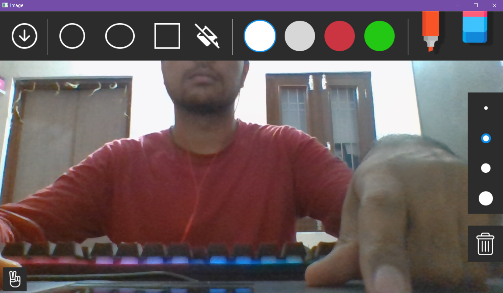

Get started with Vage and learn by following the below examples and
description.
Gestures
Selection
To enter Selection mode, raise your middle and index fingers. This
allows you to select tools, shapes, and other options.

Draw
To enter Drawing mode, raise your index finger. This allows you to
draw on the canvas with the help of pen tool.
Shapes
Rectangle
Use Selection gesture to select the Rectangle shape from the
toolbar. Then, use your index finger and thumb to indicate the
size and position of the rectangle, and your pinky finger to place
it on the canvas.
Shape color
To change the shape color, select a color from the color
palette.
Size
To adjust the Rectangle size, use the following gesture
Ellipse
Use Selection gesture to select the Ellipse shape from the
toolbar. Then, use your index finger to indicate the position of
the Ellipse, and your pinky finger to place it on the canvas.
Shape color
To change the shape color, select a color from the color
palette.
Size
To adjust the Ellipse size, use the following gesture
Circle
Use Selection gesture to select the Circle shape from the toolbar.
Then, use your index finger and thumb to indicate the size and
position of the Circle, and your pinky finger to place it on the
canvas.
Shape color
To change the shape color, select a color from the color
palette.
Size
To adjust the Circle size, use the following gesture
Fill Shape
The Fill Shape option allows you to toggle between filling and
removing the fill color from shapes before drawing the shapes. Use
Selection gesture to toggle Fill shape from the toolbar.